其他
LiLY：蓝瞳、银发和一套不对称制服
约 30 分钟的制作影像，播放约 40 万。窗口是 VRoid Studio 1.26.3，存成 LiLY.vroid。章节是设计、脸、体、衣装、再修脸、发型、完成。细纹理另开 CLIP STUDIO PAINT EX。界面是日文。画面是加速过的制作过程；下面的数值都是该帧能读到的，后面还在改。
设计
先对这张稿
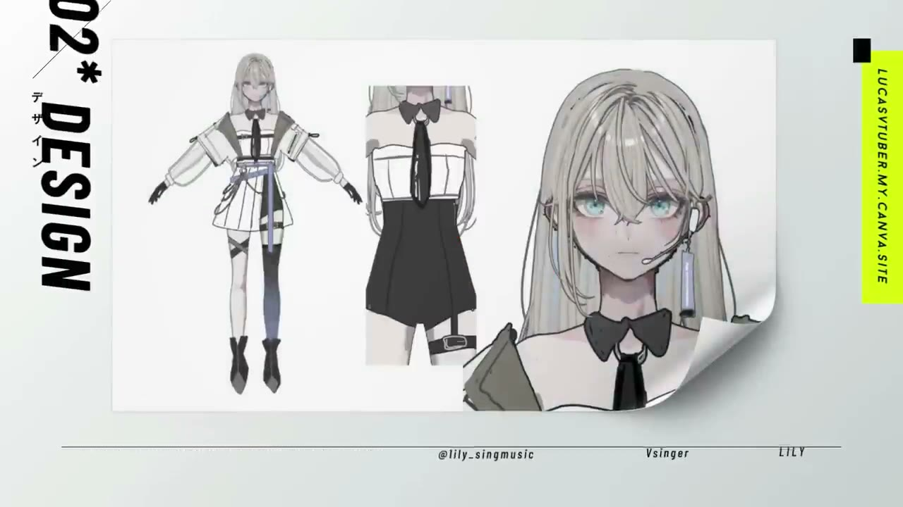
要做的是 Vsinger LiLY：浅银长发、蓝瞳、黑领白上衣和黑领带、短外套、白百褶裙、蓝斜带加链条、黑手套和短靴。正面看时只有画面右侧那条腿是黑到蓝的渐变袜，另一条腿露着。头像上有耳麦，麦杆旁边挂一条蓝色竖牌。后面的衣服和头发都对着这张，不另起一套造型。
脸
虹膜在 Clip Studio 里画
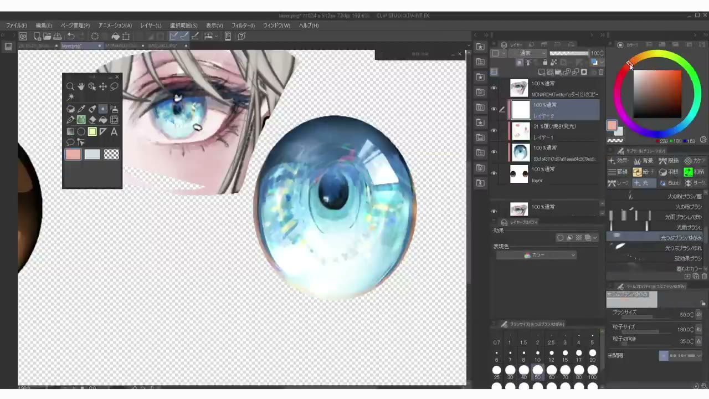
脸编辑从外部画眼睛开始。设计稿的眼睛贴在画布角上当参考，中间一颗玻璃感的蓝虹膜，高光分在好几层里。回到 VRoid 时这颗虹膜已经戴在脸上，导入那一下画面没有停住。中间还翻过「チーク」（腮红）的预设，没有停下来画。
瞳孔收小，视线略抬
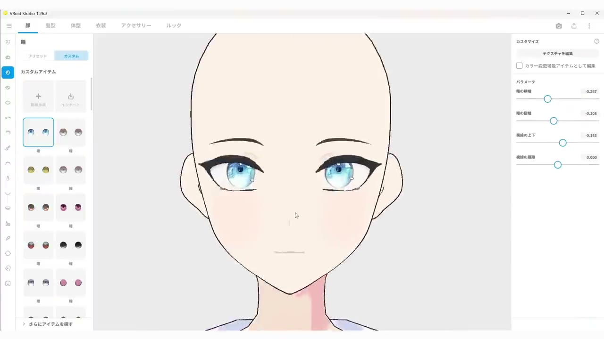
「顔」是脸，「瞳」是瞳孔这项，「カスタム」是自定义。这一帧「カラー変更可能アイテムとして編集」（当成可改色的物品来编辑）没勾。瞳の横幅（横向）-0.267，瞳の縦幅（纵向）-0.108，虹膜比默认小一圈，还是圆的。視線の上下（视线上下）0.133，眼睛略抬；視線の距離（视线距离）0.000，没有往里收。
眼睛拉宽，上眼皮压到底
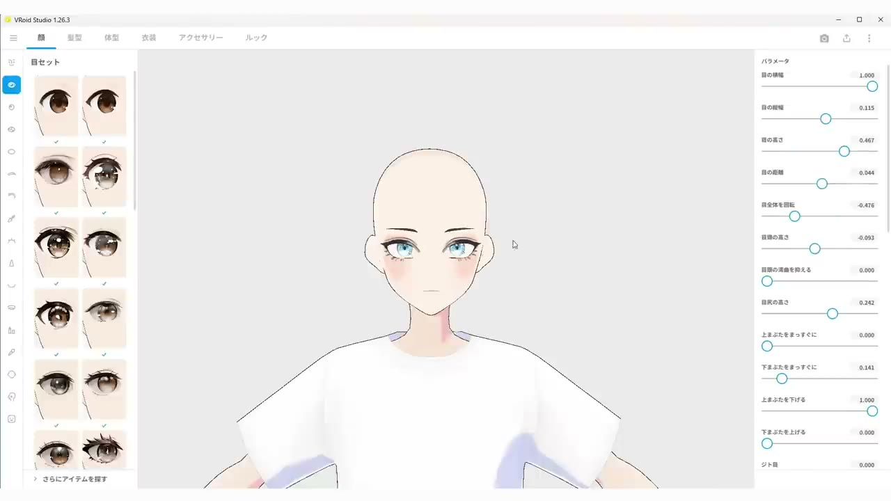
「目セット」是眼型。贴图已经是蓝眼，左侧预设缩略图还是棕眼，这边只拨形状。读数是：目の横幅 1.000，拉到最右，眼睛变宽；目の縦幅 0.115；目の高さ 0.467；目の距離 0.044，间距几乎不动。目全体を回転 -0.476，眼尾往一侧转；目頭の高さ -0.093；目頭の湾曲を抑える 0.000；目尻の高さ 0.242，眼尾抬一点。上まぶたをまっすぐにする 0.000；下まぶたをまっすぐにする 0.141。上まぶたを下げる 1.000，上眼皮压到最右，眼睛显得更沉；下まぶたを上げる和ジト目（半睁的厌厌眼）都是 0.000。结果是宽、略吊、上眼皮重的眼，不是默认的圆眼。
鼻影只点鼻梁
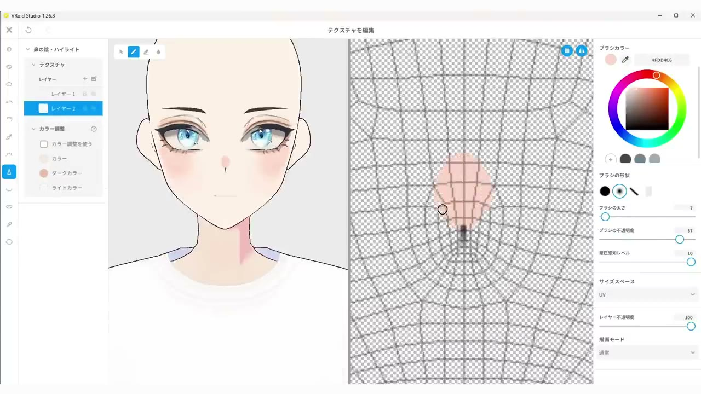
「鼻の陰・ハイライト」是鼻影和高光，不跟脸的皮肤层混在一起。软笔，ブラシの太さ（笔宽）7，ブラシの不透明度（不透明度）87，筆圧感知レベル（笔压）10。サイズスペース（尺寸空间）是 UV，描画モード（绘制模式）是通常，レイヤー不透明度 100。「カラー調整を使う」（使用颜色调整）没勾，颜色直接画上去。UV 正中只有一小块暖粉，正面鼻梁会陷进去一点，不会变成一块色斑。
嘴缝拉一条细线
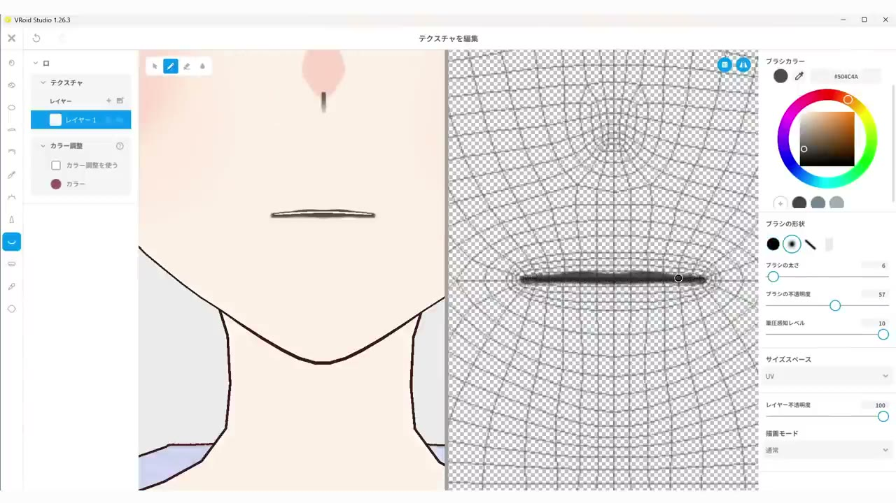
「口」是嘴，「テクスチャを編集」是编辑纹理。用细笔沿 UV 中线拉一条深色，闭嘴时就是嘴缝。线保持细，涂宽了张嘴会变成一块黑斑。尺寸空间同样是 UV，绘制模式是通常。
眼线画成带尖的翼
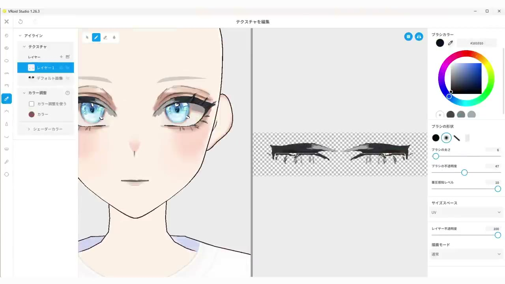
「アイライン」是眼线。在默认图上面新建レイヤー1，软笔、笔压仍是 10，不透明度大约一半，所以眼尾能叠出深浅。形状是上缘厚、眼尾翘、下缘带几根尖刺。颜色调整没开。紧接着切到「まゆげ」（眉毛），用 #D7CEBE、笔宽 7、不透明度 13 点了两条几乎贴皮的浅灰。那是第一稿，再修脸时会改深。
脸的阴影铺在很多层上
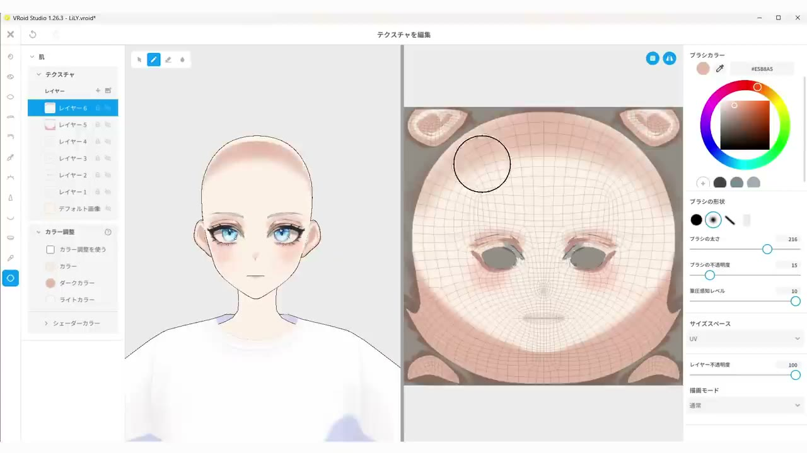
「肌」是皮肤。图层从デフォルト画像叠到レイヤー6，阴影不画在底图上。笔放得很大、不透明度只有 15，在额头、眼窝和脸颊扫一层暖色。透明度低，脸不会一块一块。笔压还是 10，尺寸空间 UV，绘制模式通常，颜色调整关掉。窗口标题这时已经是 LiLY.vroid。
体
身体只补皮肤，不拨体型
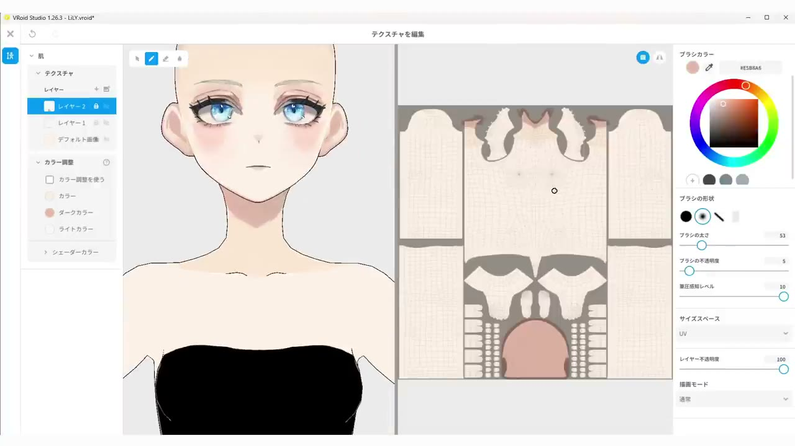
体编辑只有大约半分钟，片头叠着 BODY。没有打开体型页，还在皮肤纹理里，换成躯干的 UV，用很低的不透明度扫肉色。脸上的眼妆留着。身上已经套着一件黑抹胸，这一屏画的是皮肤，不是衣服。
衣装
连体衣上分出白衣和黑短裤
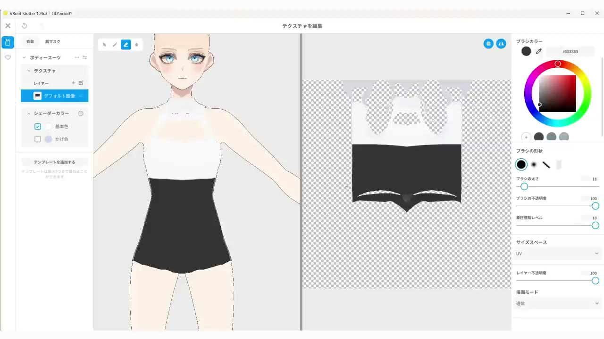
「衣装」是衣服，「肌マスク」是皮肤遮罩。底子用「ボディスーツ」（连体衣）。シェーダーカラー里「基本色」（固有色）勾着，「かけ色」（阴影色）没勾，黑白色直接画在底图上，不是叠一层阴影。UV 下半涂实，上半留白，模型就变成白背心加黑短裤。遮罩那一列「把身体藏起来」的滑杆这附近大多停在 0，四肢没有靠遮罩挖掉，形状靠往 UV 上画。列表里已经有第二件「ロングコート（ハイネック）」（高领长外套），这一帧还没画它。
渐变袜画在肌着上
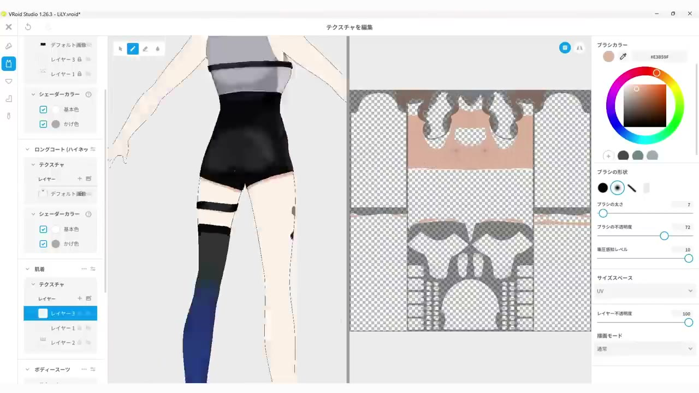
「肌着」是内搭。袜子单独放在这里，才不会和短裤的 UV 抢同一块。只有一条腿从黑过渡到蓝，另一条腿露肤，大腿上是绑带。这样和设计稿的不对称一致。连体衣和那件高领外套还在列表里，袜子不跟它们画在一张图上。
鞋跟涂成浅金
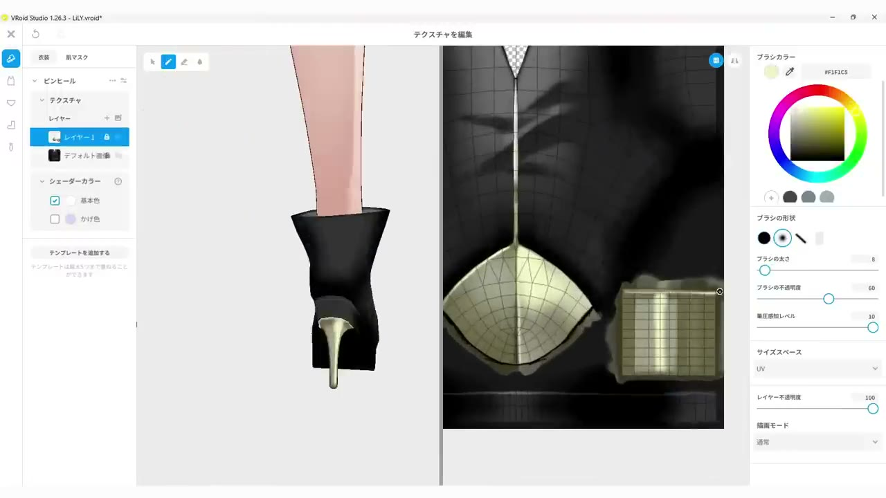
「ピンヒール」是高跟鞋这一件。只勾基本色，不勾阴影色，金色写在底图上，鞋跟才是金属而不是一层灰。UV 上鞋跟摊成扇形，旁边还有一小块矩形。软笔、笔压 10，尺寸空间 UV，绘制模式通常。靴筒留黑，只有跟和跟底发亮。
短外套和袖子分成两件
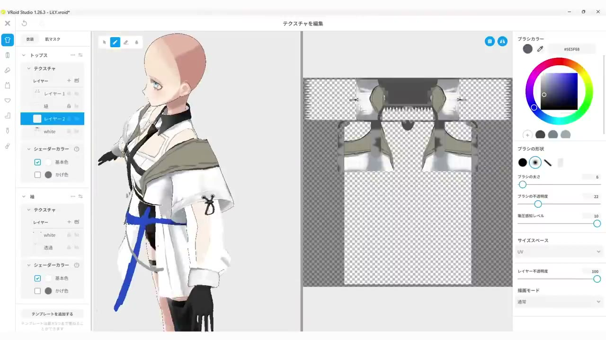
「トップス」是上衣，「袖」是袖子，两件分开涂。肩头和短披肩用灰橄榄色收边，能看见缝线；袖子留白。袖的图层里有一张名叫「透過」（透明）的，袖口以外抠空，手臂才露得出来。这时蓝斜带还是一道很粗的草稿，扣眼和垂下来的一头是后面收的。内搭上衣另外放在「上半身インナー」里调遮罩，不跟这件外套画在一起。
百褶按 UV 的竖条画
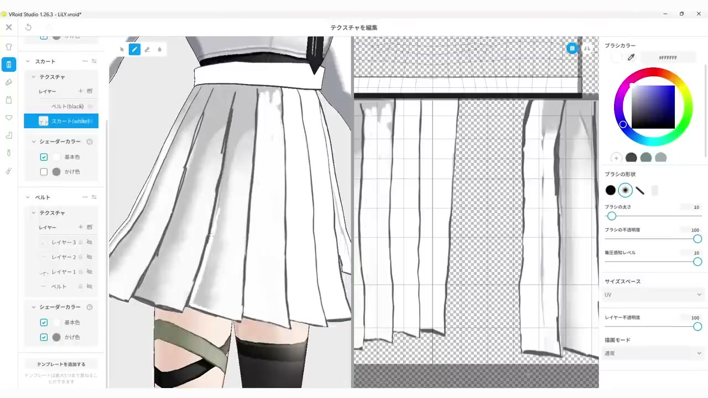
「スカート」是裙子。褶在 UV 上是分开的竖条，不是一整块布。用白笔沿每一条补高光，褶和褶之间才有深浅。裙子只勾基本色。腰带是旁边另一件「ベルト」，阴影色开着，和裙子不是同一张图。背后已经能看到黑短裤从裙摆里露出来。
蓝绳收在腰带层上
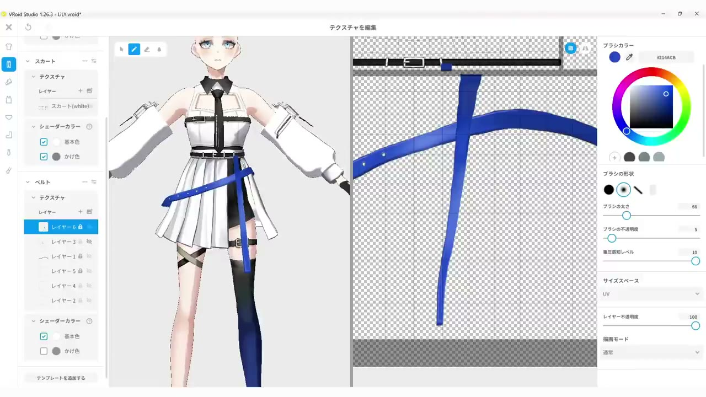
蓝斜带画在腰带上，不画进裙子的白褶。先用比较实的蓝笔拉出斜向和垂下来的一头，再把笔放宽、不透明度放得很低，把边缘揉开。带身上留着一排小孔，那是扣眼。图层菜单里能看到「インポート」（导入）和「エクスポート」（导出），细的纹样是导到外面画的。
链条在 Clip Studio 里铺
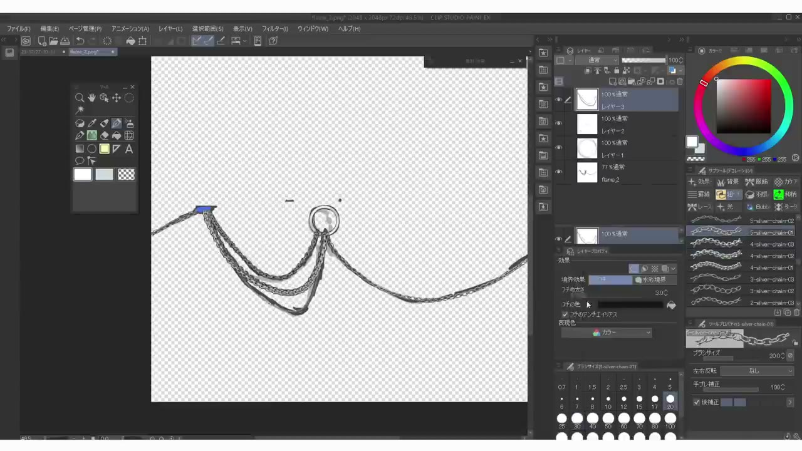
链条不在 VRoid 笔刷里硬画。在 Clip Studio 里用链条笔一节节铺，中间留一个环，边界效果用的是「水彩境界」。图层分开叠。回到模型之后，链子挂在蓝绳上，从裙摆前面绕到背后；文件对话框那一下没有停住。
再修脸
眼线改尖
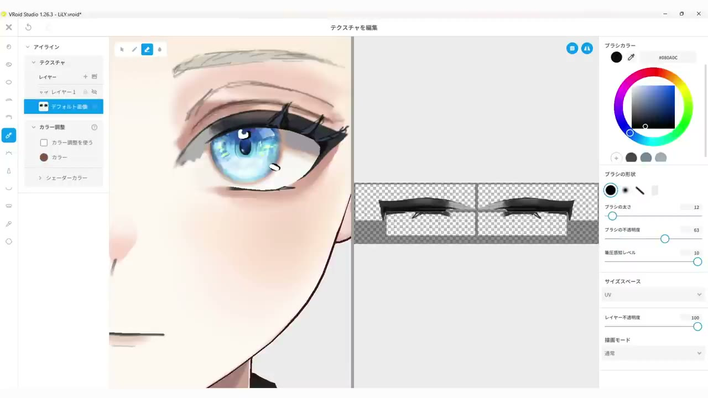
衣服画完再回到眼线。还是 UV、通常。笔比第一稿略实一点，把眼尾收成更明确的尖刺，下缘的刺也更清楚。虹膜里的高光就是开头在 Clip Studio 画的那一层，这里不再重画眼珠。
眉毛改成深色细条
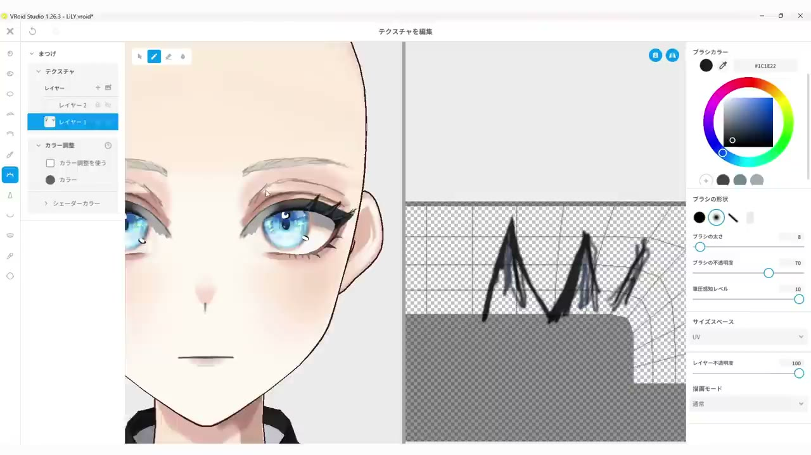
第一稿的浅灰眉换成深色。眉毛的 UV 是一条窄带，所以画布上看起来像几座尖峰，贴回脸上才是两道细眉。不透明度比第一稿高得多，眉才压得住蓝眼。颜色调整仍然关着。收尾时打开「表情編集」（表情编辑），选中 FUN（楽しい，开心），嘴角是弯的。「口内」里多数滑杆停在 0.000，「細める」（把嘴收窄）离开了 0。这是看笑的时候嘴缝还在不在，不是要留成最终表情。
发型
刘海的材质先铺银灰
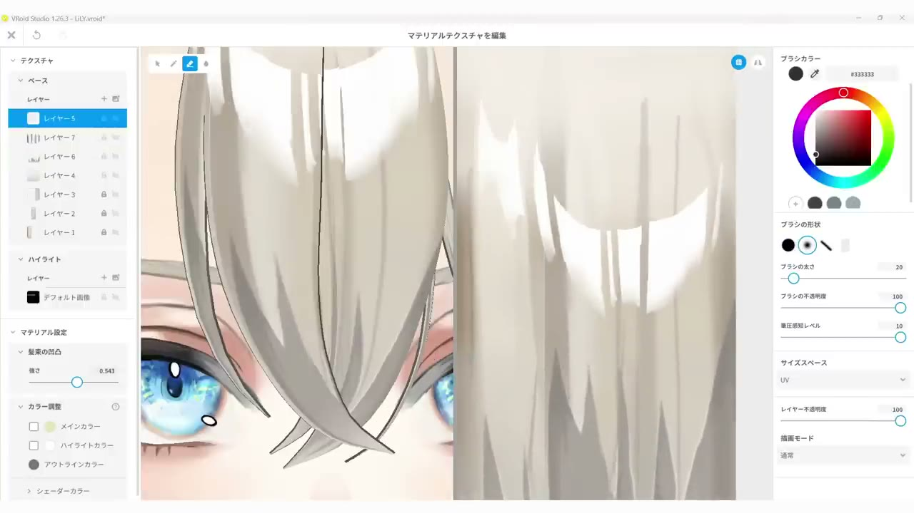
发型从 21:29 开始，先改前发的引导线，涂色和加点是交错的。这一帧在「マテリアルテクスチャを編集」（编辑材质纹理）里给已经拉出来的斜刘海上色。「ベース」是底色，レイヤー1 到 3 锁着，当前画レイヤー5，上面还有 6 和 7。「ハイライト」（高光）仍是默认图。笔色 #333333，笔宽 20，不透明度 100，往浅发束里压深色缝。髪束の凹凸（发束凹凸）的強さ 0.543，不在最左，发束有一点厚度。尺寸空间 UV，绘制模式通常。
侧刘海是很多组手绘引导
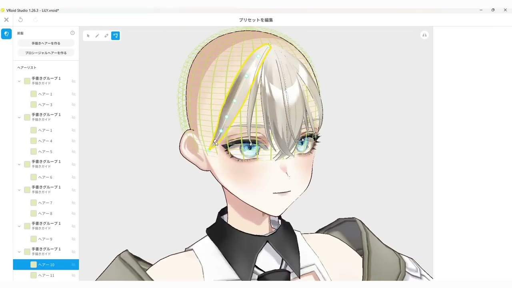
「プリセットを編集」是编辑预设，「前髪」是刘海。上面两个按钮是「手描きヘアを作る」（做手绘头发）和「プロシージャルヘアを作る」（做程序化头发）。这一缕走的是手绘：列表里多组都叫手描きグループ1，下面是ヘアー1 到ヘアー11，每组一条手描きガイド（手绘引导）。青色的点拉出一条从额角扫到眼尾的线，黄色网格是这缕头发的面。不是用一整片程序头发盖住额头。
后发拉直、拉长
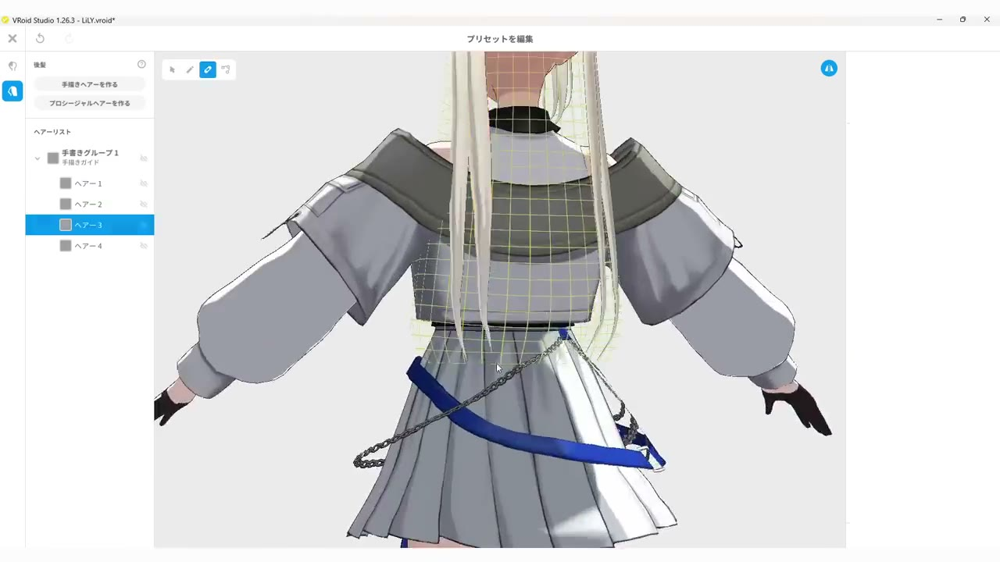
「後髪」是后发。同样用手绘引导，把头发从后颈拉到裙摆以下，左右各一缕长的贴在外套外面。退回「後髪 → カスタム」时，メインカラー（主色）是 #9E9E9E，ハイライトカラー（高光色）是 #FFFFFF，所以是银发加白高光，不是纯白。退出编辑时会问「髪型編集を終了する」，保存项是前髪，光标停在「上書き保存」（覆盖保存）。头发贴图退出时则是「テクスチャ編集を終了する」，保存项写成「ベースヘアー」。
脸侧的发片加厚
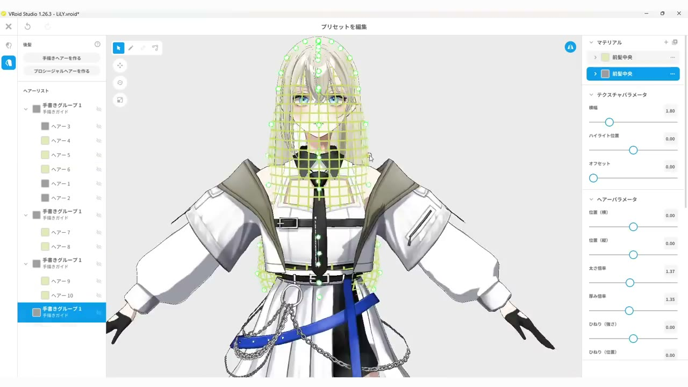
材质列表里两份都叫「前髪中央」（刘海中央），选中下面那份灰的。テクスチャパラメータ：横幅 1.80，ハイライト位置 0.00，オフセット 0.00。ヘアーパラメータ里位置横、纵都是 0.00，太さ倍率（粗细倍率）1.37，厚み倍率（厚度倍率）1.35，ひねり（強さ）和ひねり（位置）（扭转的强度和位置）都是 0.00。脸两侧的发片比默认更粗、更厚，仍然是直的，没有拧。绿色的点分布在发片上，还是手绘引导，不是重新生成一整头。
头发已经在了，再补口腔
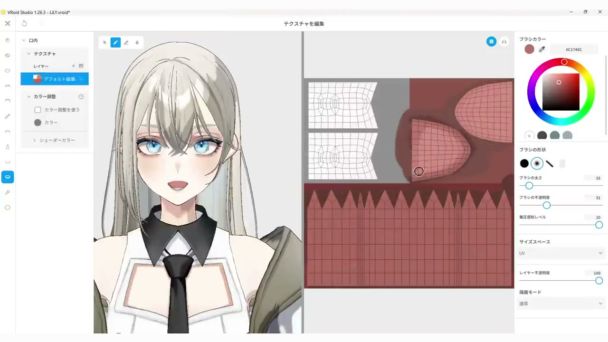
「口内」是口腔内部。这一步夹在发型中间，头发已经是银色长发。上半 UV 涂暖的口腔，下半是一排牙。软笔、不透明度 31，颜色不会涂死。颜色调整没开，尺寸空间 UV，绘制模式通常。牙留在下半，免得闭嘴时从嘴唇里透出来。
麦克风用头发做
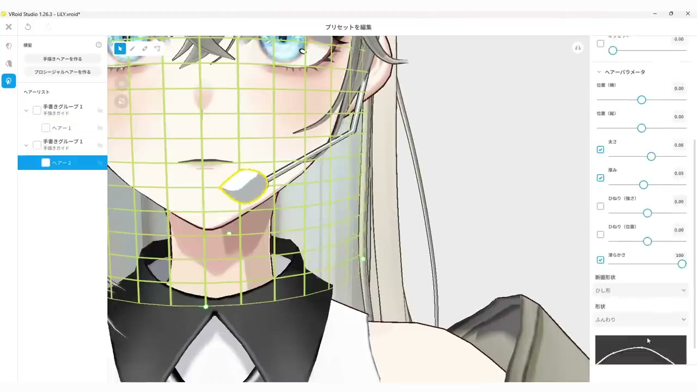
「横髪」是侧发。耳麦的麦头不是配件，是一缕头发：引导线拉成麦杆，末端收成一块白的椭圆。太さ 0.06、厚み 0.05 都勾着，所以又细又扁；两个ひねり没勾，停在 0.00。滑らかさ（平滑）勾着并且拉到 100，边缘是圆的。断面形状选「ひし形」（菱形），形状选「ふんわり」（蓬松）。下面的曲线预览是拱起的，麦头才鼓出来，而不是一根扁带子。
蓝色吊牌在 Clip Studio 里画
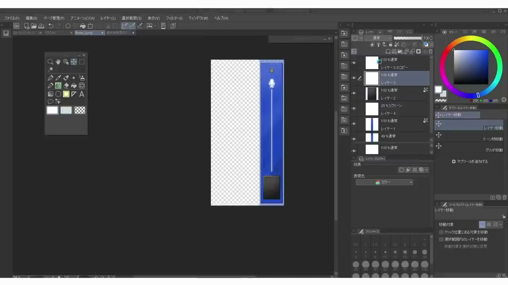
设计稿里耳麦旁边那条竖牌，也是在 Clip Studio 里画的：蓝底、一道白线、顶上一个麦的标记、底下一块黑。和链条用的是同一个文件名，图层分开。完成画面的耳侧能看到这条牌子。导入回 VRoid 的对话框没有停住。
完成
对着设计稿看全身
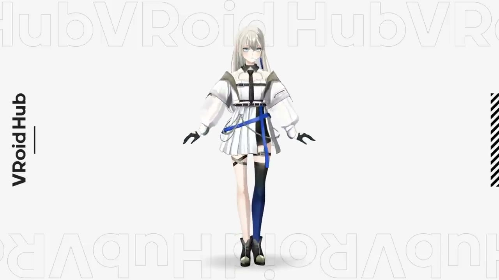
最后一屏是全身站姿。银发垂过肩，白短外套和黑领带在，百褶裙下面露出黑短裤，蓝斜带和链子绕在腰上，黑手套和短靴都在。渐变袜仍只在画面右侧那条腿上，和 0:18 的设计稿同一侧。视频停在这张完成画面，没有打开导出。